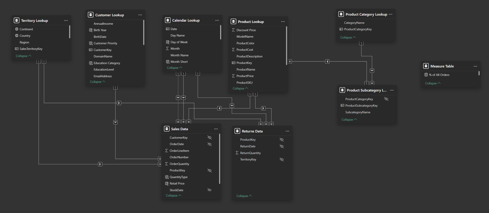

Driving Retail Performance:
This project evaluates the factors influencing retail performance by analyzing sales trends, product profitability, customer demographics, and regional performance to identify opportunities for business growth.
Interactive Dashboard
Project Overview
This project evaluates retail sales performance, customer purchasing behavior, and product profitability using the AdventureWorks sample database. Sales data was analyzed to examine relationships between revenue, profit, customer demographics, product categories, regional performance, and sales trends through an interactive Power BI dashboard.
The goal is to identify the factors that drive retail performance, uncover opportunities for business growth, and transform transactional data into actionable insights for decision-making. This matters because organizations generate large volumes of sales data, yet meaningful business value depends on effectively analyzing that data to understand customer behavior, optimize product strategy, and improve overall performance.
Dataset
The dataset was sourced from Microsoft's AdventureWorks sample database, which contains fictional retail sales records spanning customers, products, sales orders, territories, and sales representatives. The data was imported into Power BI, where relationships between multiple tables were preserved to support relational analysis.
After cleaning and preprocessing, the analytical model consisted of fact and dimension tables containing sales transactions, customer demographics, product information, geographic regions, and sales personnel. Additional measures were created using DAX to calculate key business metrics such as revenue, profit, profit margin, and year-over-year growth.
This dataset served as the foundation for an interactive Power BI dashboard, where the relational model enabled analysis of sales performance, customer behavior, product profitability, and regional trends through dynamic filtering and drill-down capabilities.
Tools & Technologies
- Power Query: Data cleaning, transformation, and preprocessing
- Power BI: Data modeling, interactive dashboarding, and visualization
Methodology
- Data Acquisition: Imported Microsoft's AdventureWorks relational retail database into Power BI, preserving relationships across sales, customer, product, territory, and employee tables to support multidimensional analysis.
- Data Cleaning & Validation: Reviewed tables for missing values, duplicate records, inconsistent formatting, and invalid data types. Standardized fields and validated relationships to ensure accurate reporting and analysis.
- Data Modeling: Built a relational data model by establishing relationships between fact and dimension tables, enabling efficient filtering, aggregation, and drill-down analysis across multiple business domains.
- DAX Calculations: Developed calculated measures and KPIs for revenue, profit, profit margin, year-over-year growth, and other business metrics to support dynamic reporting and performance evaluation.
- Dashboard Development: Designed an interactive Power BI dashboard featuring KPI cards, slicers, maps, trend analyses, product performance comparisons, and customer segmentation to facilitate business exploration.
- Visual Analytics: Applied bar charts, line charts, maps, and other visualizations to compare sales performance across products, customer groups, geographic regions, and time periods.
- Insight Generation: Analyzed sales trends, customer purchasing behavior, product profitability, and regional performance to identify key business drivers and generate actionable recommendations.
